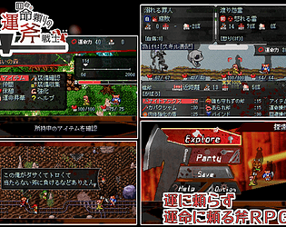
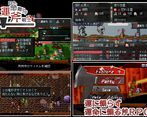
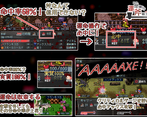

Skip to main content
itch.io
Browse Games
Game Jams
Upload Game
Developer Logs
Community
Log in
Register
Indie game store
Free games
Fun games
Horror games
Game development
Assets
Comics
Sales
Bundles
Jobs
Tags
Game Engines
VIPRPG 夏の陣2025
Hosted by
あまてん海老
34
Entries
Overview
Submissions
Community
Submission feed
A jam submission
運命頼りの斧戦士
View game page
運に頼らず、運命に頼る斧RPG
Submitted by
あじたま
(
@Ajitamar2k
) — 36 days, 7 hours before the deadline
Report submission
Add to collection



Play game
運命頼りの斧戦士's itch.io page
Leave a comment
Log in with itch.io
to leave a comment.
Comments
No one has posted a comment yet


Leave a comment
Log in with itch.io to leave a comment.